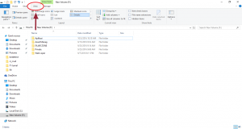
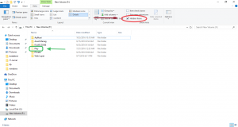
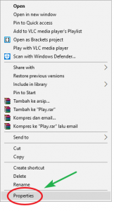
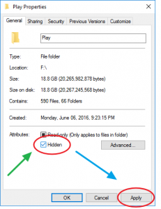
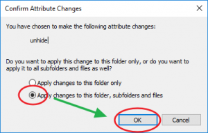

Cara Menampilkan Folder dan File Tersembunyi
By Awaludin Siking
Keamanan komputer menjadi penting untuk menjaga privasi kita dari orang lain. Bisa dengan cara menampilkan folder file pada menu explorer atau tidak di komputer atau laptop kita. Pada artikel sebelumnya, saya sudah menuliskan Cara Sembunyikan Folder dan File di windows OS.
Pada kesempatan kali ini, saya akan menjelaskan cara menampilkan file dan folder yang tersembunyi. Karena alasan tertentu kadang kita akan menyembunyikan (hide) file dan folder agar tidak diketahui oleh orang yang tidak berkepentingan. Oke ikuti langkah- langkahnya.
Langkah Pertama
Buka File Explorer. Lalu pada tab toolbar yang diatas, kita pilih view, hingga muncul banyak pilihan toolbar yang ada di tab view ( lihat lingkaran merah pada gambar dibawah ).

Langkah kedua
Klik pada option toolbar hidden items, hingga muncul tanda centang pada kotak pilihan tersebut
( lihat lingkaran merah ).

Langkah Ketiga

Kemudian untuk menampilkan folder dan filenya permanen, klik kanan pada folder Play, lalu akan muncul tampilan tab dengan beberapa pilihan menu.
Pilih properties seperti terlihat dalam pada gambar disamping.
Langkah Keempat

Setelah diKlik Properties, akan muncul tab Play Properties.
klik pada kotak hidden, hingga hilang tanda centang pada kotak.
Lalu klik Apply, jika tanda centang telah hilang.
Langkah Kelima
Setelah kita Apply, akan muncul tab Confirm Attribute Changes. Tab ini adalah konfirmasi apakah kita ingin menampilkan folder dan file seluruhnya atau hanya folder utama. iniklik pada pilihan kedua (lihat gambar disamping).
Langkah Terakhir

Terakhir, kita klik OK.
Setelah semua proses kita selesaikan, Akhirnya kita telah menampilkan folder dan file yang ada didalam folder (Play).
Sekian artikel mengenai cara menampilkan folder dan file yang tersembunyi. Masih ada beberapa cara lain yang bisa dilakukan untuk menampilkan folder dan file yang tersembunyi. Mungkin di lain kesempatan saya akan menjelaskan pada artikel selanjutnya.

 Perbedaan Jaringan 3G dan 4G
Perbedaan Jaringan 3G dan 4G
 Jumlah Core dan Hubungannya dengan
Jumlah Core dan Hubungannya dengan Pengertian Subnetting IP Address
Pengertian Subnetting IP Address  Cara Mengatur Layar di Windows Saat
Cara Mengatur Layar di Windows Saat Pengertian dan Cara Defrag/Defragment
Pengertian dan Cara Defrag/Defragment  Macam macam file audio dan
Macam macam file audio dan  Apa itu Extreme Programming ?
Apa itu Extreme Programming ?